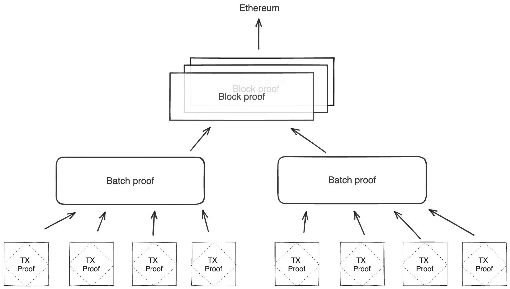

Miden architecture overview
Polygon Miden’s architecture departs considerably from typical blockchain designs to support privacy and parallel transaction execution.
In traditional blockchains, state and transactions must be transparent to be verifiable. This is necessary for block production and execution.
However, user generated zero-knowledge proofs allow state transitions, e.g. transactions, to be verifiable without being transparent.
Miden design goals
- High throughput: The ability to process a high number of transactions (state changes) over a given time interval.
- Privacy: The ability to keep data known to one’s self and anonymous while processing and/or storing it.
- Asset safety: Maintaining a low risk of mistakes or malicious behavior leading to asset loss.
Actor model
The actor model inspires Polygon Miden’s execution model. This is a well-known computational design paradigm in concurrent systems. In the actor model, actors are state machines responsible for maintaining their own state. In the context of Polygon Miden, each account is an actor. Actors communicate with each other by exchanging messages asynchronously. One actor can send a message to another, but it is up to the recipient to apply the requested change to their state.
Polygon Miden’s architecture takes the actor model further and combines it with zero-knowledge proofs. Now, actors not only maintain and update their own state, but they can also prove the validity of their own state transitions to the rest of the network. This ability to independently prove state transitions enables local smart contract execution, private smart contracts, and much more. And it is quite unique in the rollup space. Normally only centralized entities - sequencer or prover - create zero-knowledge proofs, not the users.
Core concepts
Miden uses accounts and notes, both of which hold assets. Accounts consume and produce notes during transactions. Transactions describe the account state changes of single accounts.
Accounts
An Account can hold assets and define rules how assets can be transferred. Accounts can represent users or autonomous smart contracts. The account chapter describes the design of an account, its storage types, and creating an account.
Notes
A Note is a message that accounts send to each other. A note stores assets and a script that defines how the note can be consumed. The note chapter describes the design, the storage types, and the creation of a note.
Assets
An Asset can be fungible and non-fungible. They are stored in the owner’s account itself or in a note. The asset chapter describes asset issuance, customization, and storage.
Transactions
A Transactions describe the production and consumption of notes by a single account.
Executing a transaction always results in a STARK proof.
The transaction chapter describes the transaction design and implementation, including an in-depth discussion of how transaction execution happens in the transaction kernel program.
Accounts produce and consume notes to communicate
State and execution
The actor-based execution model requires a radically different approach to recording the system's state. Actors and the messages they exchange must be treated as first-class citizens. Polygon Miden addresses this by combining the state models of account-based systems like Ethereum and UTXO-based systems like Bitcoin and Zcash.
Miden's state model captures the individual states of all accounts and notes, and the execution model describes state progress in a sequence of blocks.
State model
State describes everything that is the case at a certain point in time. Individual states of accounts or notes can be stored on-chain and off-chain. This chapter describes the three different state databases in Miden.
Blockchain
The Blockchain defines how state progresses as aggregated-state-updates in batches, blocks, and epochs. The blockchain chapter describes the execution model and how blocks are built.
Operators capture and progress state
Accounts / Smart Contracts
An Account represents the primary entity of the protocol. Capable of holding assets, storing data, and executing custom code. Each Account is a specialized smart contract providing a programmable interface for interacting with its state and assets.
What is the purpose of an account?
In Miden's hybrid UTXO- and account-based model Accounts enable the creation of expressive smart contracts via a Turing-complete language.
Account core elements
An Account is composed of several core elements, illustrated below:

These elements are:
ID
An immutable and unique identifier for the
Account.
A 120-bit long number represents the Account ID. This identifier is structured to encapsulate specific account metadata while preventing precomputed attack vectors (e.g., rainbow table attacks).
The ID is generated by hashing a user-generated random seed together with commitments to the initial code and storage of the Account and the anchor block. The anchor block refers to specific blockchain epoch block in which the account is created. The resulting 256-bit long hash is then manipulated and shortened to 120-bit. Manipulation includes encoding the account type, account storage mode, the version of the Account ID scheme, and the anchor block.
Account type, storage mode, and version are included in the ID, to ensure these properties can be determined without additional computation. Anyone can immediately tell those properties by just looking at the ID in bit representation.
Also, the ID generation process ensures that an attacker cannot precompute an ID before the anchor block's commitment is available. This significantly mitigates the risk of ID hijacking, where an adversary might attempt to claim assets sent to an unregistered ID. By anchoring the ID to a recent epoch block, the window for potential attacks is minimized, reinforcing the security of asset transfers and account registration.
An Account ID is considered invalid if:
- The metadata (storage mode, type, or version) does not match any recognized values.
- The anchor epoch exceeds .
- The least significant 8 bits of the ID are nonzero.
An Account ID can be encoded in different formats:
- Bech32 (default):
- Example:
mm1qq2qlgz2reslcyqqqqfxa7836chrjcvk - Benefits:
- Built-in error detection via checksum algorithm
- Human-readable prefix indicates network type
- Less prone to transcription errors
- Structure:
- Human-readable prefix:
mm(e.g., indicates Miden Mainnet) - Separator:
1 - Data part with integrated checksum
- Human-readable prefix:
- Example:
Info
- We strongly recommend encoding account ID's using Bech32 for all user-facing applications
- Hexadecimal (debugging):
- Example:
0x140fa04a1e61fc100000126ef8f1d6 - Frequenty used encoding for blockchain addresses
- Example:
Code
A collection of functions defining the
Account’s programmable interface.
Every Miden Account is essentially a smart contract. The Code component defines the account’s functions, which can be invoked through both Note scripts and transaction scripts. Key characteristics include:
- Mutable access: Only the
Account’s own functions can modify its storage and vault. All state changes—such as updating storage slots, incrementing the nonce, or transferring assets—must occur through these functions. - Function commitment: Each function can be called by its MAST root. The root represents the underlying code tree as a 32-byte commitment. This ensures integrity, i.e., the caller calls what he expects.
- Note creation:
Accountfunctions can generate new notes.
Storage
A flexible, arbitrary data store within the
Account.
The storage is divided into a maximum of 255 indexed storage slots. Each slot can either store a 32-byte value or serve as a pointer to a key-value store with large amounts capacity.
StorageSlot::Value: Contains 32 bytes of arbitrary data.StorageSlot::Map: Contains a StorageMap, a key-value store where both keys and values are 32 bytes. The slot's value is a commitment to the entire map.
Vault
A collection of assets stored by the
Account.
Large amounts of fungible and non-fungible assets can be stored in the Accounts vault.
Nonce
A counter incremented with each state update to the
Account.
The nonce enforces ordering and prevents replay attacks. It must strictly increase with every Account state update. The increment must be less than but always greater than the previous nonce, ensuring a well-defined sequence of state changes.
If a smart contract function should be callable by other users, it must increment the Account's nonce. Otherwise, only the contract owner—i.e., the party possessing the contract's key—can execute the function.
Account lifecycle
Throughout its lifetime, an Account progresses through various phases:
- Creation and Deployment: Initialization of the
Accounton the network. - Active Operation: Continuous state updates via
Accountfunctions that modify the storage, nonce, and vault. - Termination or Deactivation: Optional, depending on the contract’s design and governance model.
Account creation
For an Account to be recognized by the network, it must exist in the account database maintained by Miden node(s).
However, a user can locally create a new Account ID before it’s recognized network-wide. The typical process might be:
- Alice generates a new
AccountID locally (according to the desiredAccounttype) using the Miden client. - The Miden client checks with a Miden node to ensure the ID does not already exist.
- Alice shares the new ID with Bob (for example, to receive assets).
- Bob executes a transaction, creating a note containing assets for Alice.
- Alice consumes Bob’s note in her own transaction to claim the asset.
- Depending on the
Account’s storage mode and transaction type, the operator receives the newAccountID and, if all conditions are met, includes it in theAccountdatabase.
Additional information
Account type
There are two main categories of Accounts in Miden: basic accounts and faucets.
-
Basic Accounts: Basic Accounts may be either mutable or immutable:
- Mutable: Code can be changed after deployment.
- Immutable: Code cannot be changed once deployed.
-
Faucets: Faucets are always immutable and can be specialized by the type of assets they issue:
Type and mutability are encoded in the two most significant bits of the Account's ID.
Account storage mode
Users can choose whether their Accounts are stored publicly or privately. The preference is encoded in the third and forth most significant bits of the Accounts ID:
-
Public
Accounts: TheAccount’s state is stored on-chain, similar to howAccounts are stored in public blockchains like Ethereum. Contracts that rely on a shared, publicly accessible state (e.g., a DEX) should be public. -
Private
Accounts: Only a commitment (hash) to theAccount’s state is stored on-chain. This mode is suitable for users who prioritize privacy or plan to store a large amount of data in theirAccount. To interact with a privateAccount, a user must have knowledge of its interface.
The storage mode is chosen during Account creation, it cannot be changed later.
Notes
A Note is the medium through which Accounts communicate. A Note holds assets and defines how they can be consumed.
What is the purpose of a note?
In Miden's hybrid UTXO and account-based model Notes represent UTXO's which enable parallel transaction execution and privacy through asynchronous local Note production and consumption.
Note core components
A Note is composed of several core components, illustrated below:

These components are:
Assets
An asset container for a
Note.
A Note can contain from 0 up to 256 different assets. These assets represent fungible or non-fungible tokens, enabling flexible asset transfers.
Script
The code executed when the
Noteis consumed.
Each Note has a script that defines the conditions under which it can be consumed. When accounts consume Notes in transactions, Note scripts call the account’s interface functions. This enables all sorts of operations beyond simple asset transfers. The Miden VM’s Turing completeness allows for arbitrary logic, making Note scripts highly versatile. There is no limit to the amount of code a Note can hold.
Inputs
Arguments passed to the
Notescript during execution.
A Note can have up to 128 input values, which adds up to a maximum of 1 KB of data. The Note script can access these inputs. They can convey arbitrary parameters for Note consumption.
Serial number
A unique and immutable identifier for the
Note.
The serial number has two main purposes. Firstly by adding some randomness to the Note it ensures it's uniqueness, secondly in private Notes it helps prevent linkability between the Note's hash and its nullifier. The serial number should be a random 32 bytes number chosen by the user. If leaked, the Note’s nullifier can be easily computed, potentially compromising privacy.
Metadata
Additional
Noteinformation.
Notes include metadata such as the sender’s account ID and a tag that aids in discovery. Regardless of storage mode, these metadata fields remain public.
Note Lifecycle
The Note lifecycle proceeds through four primary phases: creation, validation, discovery, and consumption. Throughout this process, Notes function as secure, privacy-preserving vehicles for asset transfers and logic execution.
Note creation
Accounts can create Notes in a transaction. The Note exists if it is included in the global Notes DB.
- Users: Executing local or network transactions.
- Miden operators: Facilitating on-chain actions, e.g. such as executing user
Notes against a DEX or other contracts.
Note storage mode
As with accounts, Notes can be stored either publicly or privately:
- Public mode: The
Notedata is stored in the note database, making it fully visible on-chain. - Private mode: Only the
Note’s hash is stored publicly. TheNote’s actual data remains off-chain, enhancing privacy.
Note validation
Once created, a Note must be validated by a Miden operator. Validation involves checking the transaction proof that produced the Note to ensure it meets all protocol requirements.
After validation Notes become “live” and eligible for consumption. If creation and consumption happens within the same block, there is no entry in the Notes DB. All other notes, are being added either as a commitment or fully public.
Note discovery
Clients often need to find specific Notes of interest. Miden allows clients to query the Note database using Note tags. These lightweight, 32-bit data fields serve as best-effort filters, enabling quick lookups for Notes related to particular use cases, scripts, or account prefixes.
Using Note tags strikes a balance between privacy and efficiency. Without tags, querying a specific Note ID reveals a user’s interest to the operator. Conversely, downloading and filtering all registered Notes locally is highly inefficient. Tags allow users to adjust their level of privacy by choosing how broadly or narrowly they define their search criteria, letting them find the right balance between revealing too much information and incurring excessive computational overhead.
Note consumption
To consume a Note, the consumer must know its data, including the inputs needed to compute the nullifier. Consumption occurs as part of a transaction. Upon successful consumption a nullifier is generated for the consumed Notes.
Upon successful verification of the transaction:
- The Miden operator records the
Note’s nullifier as “consumed” in the nullifier database. - The
Note’s one-time claim is thus extinguished, preventing reuse.
Note recipient restricting consumption
Consumption of a Note can be restricted to certain accounts or entities. For instance, the P2ID and P2IDR Note scripts target a specific account ID. Alternatively, Miden defines a RECIPIENT (represented as 32 bytes) computed as:
hash(hash(hash(serial_num, [0; 4]), script_hash), input_hash)
Only those who know the RECIPIENT’s pre-image can consume the Note. For private Notes, this ensures an additional layer of control and privacy, as only parties with the correct data can claim the Note.
The transaction prologue requires all necessary data to compute the Note hash. This setup allows scenario-specific restrictions on who may consume a Note.
For a practical example, refer to the SWAP note script, where the RECIPIENT ensures that only a defined target can consume the swapped asset.
Note nullifier ensuring private consumption
The Note nullifier, computed as:
hash(serial_num, script_hash, input_hash, vault_hash)
This achieves the following properties:
- Every
Notecan be reduced to a single unique nullifier. - One cannot derive a
Note's hash from its nullifier. - To compute the nullifier, one must know all components of the
Note: serial_num, script_hash, input_hash, and vault_hash.
That means if a Note is private and the operator stores only the Note's hash, only those with the Note details know if this Note has been consumed already. Zcash first introduced this approach.

Assets
An Asset is a unit of value that can be transferred from one account to another using notes.
What is the purpose of an asset?
In Miden, Assets serve as the primary means of expressing and transferring value between accounts through notes. They are designed with four key principles in mind:
-
Parallelizable exchange:
By managing ownership and transfers directly at the account level instead of relying on global structures like ERC20 contracts, accounts can exchangeAssets concurrently, boosting scalability and efficiency. -
Self-sovereign ownership:
Assets are stored in the accounts directly. This ensures that users retain complete control over theirAssets. -
Censorship resistance:
Users can transact freely and privately with no single contract or entity controllingAssettransfers. This reduces the risk of censored transactions, resulting in a more open and resilient system. -
Flexible fee payment:
Unlike protocols that require a specific baseAssetfor fees, Miden allows users to pay fees in any supportedAsset. This flexibility simplifies the user experience.
Native asset
All data structures following the Miden asset model that can be exchanged.
Native Assets adhere to the Miden Asset model (encoding, issuance, storage). Every native Asset is encoded using 32 bytes, including both the ID of the issuing account and the Asset details.
Issuance
Info
- Only faucet accounts can issue assets.
Faucets can issue either fungible or non-fungible Assets as defined at account creation. The faucet's code specifies the Asset minting conditions: i.e., how, when, and by whom these Assets can be minted. Once minted, they can be transferred to other accounts using notes.
Type
Fungible asset
Fungible Assets are encoded with the amount and the faucet_id of the issuing faucet. The amount is always 2^{63} - 1 or smaller, representing the maximum supply for any fungible Asset. Examples include ETH and various stablecoins (e.g., DAI, USDT, USDC).
Non-fungible asset
Non-fungible Assets are encoded by hashing the Asset data into 32 bytes and placing the faucet_id as the second element. Examples include NFTs like a DevCon ticket.
Storage
Accounts and notes have vaults used to store Assets. Accounts use a sparse Merkle tree as a vault while notes use a simple list. This enables an account to store a practically unlimited number of assets while a note can only store 255 assets.

Burning
Assets in Miden can be burned through various methods, such as rendering them unspendable by storing them in an unconsumable note, or sending them back to their original faucet for burning using it's dedicated function.
Alternative asset models
All data structures not following the Miden asset model that can be exchanged.
Miden is flexible enough to support other Asset models. For example, developers can replicate Ethereum’s ERC20 pattern, where fungible Asset ownership is recorded in a single account. To transact, users send a note to that account, triggering updates in the global hashmap state.
Transactions
A Transaction in Miden is the state transition of a single account. A Transaction takes as input a single account and zero or more notes, and outputs the same account with an updated state, together with zero or more notes. Transactions in Miden are Miden VM programs, their execution resulting in the generation of a zero-knowledge proof.
Miden's Transaction model aims for the following:
- Parallel transaction execution: Accounts can update their state independently from each other and in parallel.
- Private transaction execution: Client-side
Transactionproving allows the network to verifyTransactions validity with zero knowledge.
Compared to most blockchains, where a Transaction typically involves more than one account (e.g., sender and receiver), a Transaction in Miden involves a single account. To illustrate, Alice sends 5 ETH to Bob. In Miden, sending 5 ETH from Alice to Bob takes two Transactions, one in which Alice creates a note containing 5 ETH and one in which Bob consumes that note and receives the 5 ETH. This model removes the need for a global lock on the blockchain's state, enabling Miden to process Transactions in parallel.
Currently the protocol limits the number of notes that can be consumed and produced in a transaction to 1000 each, which means that in a single Transaction an application could serve up to 2000 different user requests like deposits or withdrawals into/from a pool.
A simple transaction currently takes about 1-2 seconds on a MacBook Pro. It takes around 90K cycles to create the proof, as of now the signature verification step is the dominant cost.
Transaction lifecycle
Every Transaction describes the process of an account changing its state. This process is described as a Miden VM program, resulting in the generation of a zero-knowledge proof. Transactions are being executed in a specified sequence, in which several notes and a transaction script can interact with an account.

Inputs
A Transaction requires several inputs:
- Account: A
Transactionis always executed against a single account. The executor must have complete knowledge of the account's state. - Notes: A
Transactioncan consume and output up to1024notes. The executor must have complete knowledge of the note data, including note inputs, before consumption. For private notes, the data cannot be fetched from the blockchain and must be received through an off-chain channel. - Blockchain state: The current reference block and information about the notes database used to authenticate notes to be consumed must be retrieved from the Miden operator before execution. Usually, notes to be consumed in a
Transactionmust have been created before the reference block. - Transaction script (optional): The
Transactionscript is code defined by the executor. And like note scripts, they can invoke account methods, e.g., sign a transaction. There is no limit to the amount of code aTransactionscript can hold. - Transaction arguments (optional): For every note, the executor can inject transaction arguments that are present at runtime. If the note script — and therefore the note creator — allows, the note script can read those arguments to allow dynamic execution. See below for an example.
- Foreign account data (optional): Any foreign account data accessed during a
Transaction, whether private or public, must be available beforehand. There is no need to know the full account storage, but the data necessary for theTransaction, e.g., the key/value pair that is read and the corresponding storage root.
Flow
- Prologue Executes at the beginning of a transaction. It validates on-chain commitments against the provided data. This is to ensure that the transaction executes against a valid on-chain recorded state of the account and to be consumed notes. Notes to be consumed must be registered on-chain — except for erasable notes which can be consumed without block inclusion.
- Note processing Notes are executed sequentially against the account, following a sequence defined by the executor. To execute a note means processing the note script that calls methods exposed on the account interface. Notes must be consumed fully, which means that all assets must be transferred into the account or into other created notes. Note scripts can invoke the account interface during execution. They can push assets into the account's vault, create new notes, set a transaction expiration, and read from or write to the account’s storage. Any method they call must be explicitly exposed by the account interface. Note scripts can also invoke methods of foreign accounts to read their state.
- Transaction script processing
Transactionscripts are an optional piece of code defined by the executor which interacts with account methods after all notes have been executed. For example,Transactionscripts can be used to sign theTransaction(e.g., sign the transaction by incrementing the nonce of the account, without which, the transaction would fail), to mint tokens from a faucet, create notes, or modify account storage.Transactionscripts can also invoke methods of foreign accounts to read their state. - Epilogue
Completes the execution, resulting in an updated account state and a generated zero-knowledge proof. The validity of the resulting state change is checked. The account's
Noncemust have been incremented, which is how the entire transaction is authenticated. Also, the net sum of all involved assets must be0(if the account is not a faucet).
The proof together with the corresponding data needed for verification and updates of the global state can then be submitted and processed by the network.
Examples
To illustrate the Transaction protocol, we provide two examples for a basic Transaction. We will use references to the existing Miden Transaction kernel — the reference implementation of the protocol — and to the methods in Miden Assembly.
Creating a P2ID note
Let's assume account A wants to create a P2ID note. P2ID notes are pay-to-ID notes that can only be consumed by a specified target account ID. Note creators can provide the target account ID using the note inputs.
In this example, account A uses the basic wallet and the authentication component provided by miden-lib. The basic wallet component defines the methods wallets::basic::create_note and wallets::basic::move_asset_to_note to create notes with assets, and wallets::basic::receive_asset to receive assets. The authentication component exposes auth::basic::auth_tx_rpo_falcon512 which allows for signing a transaction. Some account methods like account::get_id are always exposed.
The executor inputs to the Miden VM a Transaction script in which he places on the stack the data (tag, aux, note_type, execution_hint, RECIPIENT) of the note(s) that he wants to create using wallets::basic::create_note during the said Transaction. The NoteRecipient is a value that describes under which condition a note can be consumed and is built using a serial_number, the note_script (in this case P2ID script) and the note_inputs. The Miden VM will execute the Transaction script and create the note(s). After having been created, the executor can use wallets::basic::move_asset_to_note to move assets from the account's vault to the notes vault.
After finalizing the Transaction the updated state and created note(s) can now be submitted to the Miden operator to be recorded on-chain.
Consuming a P2ID note
Let's now assume that account A wants to consume a P2ID note to receive the assets contained in that note.
To start the transaction process, the executor fetches and prepares all the input data to the Transaction. First, it retrieves blockchain data, like global inputs and block data of the most recent block. This information is needed to authenticate the native account's state and that the P2ID note exists on-chain. Then it loads the full account and note data, to start the Transaction execution.
In the transaction's prologue the data is being authenticated by re-hashing the provided values and comparing them to the blockchain's data (this is how private data can be used and verified during the execution of transaction without actually revealing it to the network).
Then the P2ID note script is being executed. The script starts by reading the note inputs note::get_inputs — in our case the account ID of the intended target account. It checks if the provided target account ID equals the account ID of the executing account. This is the first time the note invokes a method exposed by the Transaction kernel, account::get_id.
If the check passes, the note script pushes the assets it holds into the account's vault. For every asset the note contains, the script calls the wallets::basic::receive_asset method exposed by the account's wallet component. The wallets::basic::receive_asset procedure calls account::add_asset, which cannot be called from the note itself. This allows accounts to control what functionality to expose, e.g. whether the account supports receiving assets or not, and the note cannot bypass that.
After the assets are stored in the account's vault, the transaction script is being executed. The script calls auth::basic::auth_tx_rpo_falcon512 which is explicitly exposed in the account interface. The method is used to verify a provided signature against a public key stored in the account's storage and a commitment to this specific transaction. If the signature can be verified, the method increments the nonce.
The Epilogue finalizes the transaction by computing the final account hash, asserting the nonce increment and checking that no assets were created or destroyed in the transaction — that means the net sum of all assets must stay the same.
Transaction types
There are two types of Transactions in Miden: local transactions and network transactions [not yet implemented].
Local transaction
Users transition their account's state locally using the Miden VM and generate a Transaction proof that can be verified by the network, which we call client-side proving. The network then only has to verify the proof and to change the global parts of the state to apply the state transition.
They are useful, because:
- They enable privacy as neither the account state nor account code are needed to verify the zero-knowledge proof. Public inputs are only commitments and block information that are stored on-chain.
- They are cheaper (i.e., lower in fees) as the execution of the state transition and the generation of the zero-knowledge proof are already made by the users. Hence privacy is the cheaper option on Miden.
- They allow arbitrarily complex computation to be done. The proof size doesn't grow linearly with the complexity of the computation. Hence there is no gas limit for client-side proving.
Client-side proving or local transactions on low-power devices can be slow, but Miden offers a pragmatic alternative: delegated proving. Instead of waiting for complex computations to finish on your device, you can hand off proof generation to a service, ensuring a consistent 1-2 second proving time, even on mobile.
Network transaction
The Miden operator executes the Transaction and generates the proof. Miden uses network Transactions for smart contracts with public shared state. This type of Transaction is quite similar to the ones in traditional blockchains (e.g., Ethereum).
They are useful, because:
- For public shared state of smart contracts. Network
Transactions allow orchestrated state changes of public smart contracts without race conditions. - Smart contracts should be able to be executed autonomously, ensuring liveness. Local
Transactions require a user to execute and prove, but in some cases a smart contract should be able to execute when certain conditions are met. - Clients may not have sufficient resources to generate zero-knowledge proofs.
The ability to facilitate both, local and network Transactions, is one of the differentiating factors of Miden compared to other blockchains. Local Transaction execution and proving can happen in parallel as for most Transactions there is no need for public state changes. This increases the network's throughput tremendously and provides privacy. Network Transactions on the other hand enable autonomous smart contracts and public shared state.
Good to know
Usually, notes that are consumed in a
Transactionmust be recorded on-chain in order for theTransactionto succeed. However, Miden supports erasable notes which are notes that can be consumed in aTransactionbefore being registered on-chain. For example, one can build a sub-second order book by allowing its traders to build faster transactions that depend on each other and are being validated or erased in batches.There is no nullifier check during a
Transaction. Nullifiers are checked by the Miden operator duringTransactionverification. So at the local level, there is "double spending." If a note was already spent, i.e. there exists a nullifier for that note, the block producer would never include theTransactionas it would make the block invalid.One of the main reasons for separating execution and proving steps is to allow stateless provers; i.e., the executed
Transactionhas all the data it needs to re-execute and prove aTransactionwithout database access. This supports easier proof-generation distribution.Not all
Transactions require notes. For example, the owner of a faucet can mint new tokens using only aTransactionscript, without interacting with external notes.In Miden executors can choose arbitrary reference blocks to execute against their state. Hence it is possible to set
Transactionexpiration heights and in doing so, to define a block height until aTransactionshould be included into a block. If theTransactionis expired, the resulting account state change is not valid and theTransactioncannot be verified anymore.Note and
Transactionscripts can read the state of foreign accounts during execution. This is called foreign procedure invocation. For example, the price of an asset for the Swap script might depend on a certain value stored in the oracle account.An example of the right usage of
Transactionarguments is the consumption of a Swap note. Those notes allow asset exchange based on predefined conditions. Example:
- The note's consumption condition is defined as "anyone can consume this note to take
Xunits of asset A if they simultaneously create a note sending Y units of asset B back to the creator." If an executor wants to buy only a fraction(X-m)of asset A, they provide this amount via transaction arguments. The executor would provide the valuem. The note script then enforces the correct transfer:
- A new note is created returning
Y-((m*Y)/X)of asset B to the sender.- A second note is created, holding the remaining
(X-m)of asset A for future consumption.When executing a
Transactionthe max number of VM cycles is .
State
The State describes the current condition of all accounts, notes, nullifiers and their statuses. Reflecting the “current reality” of the protocol at any given time.
What is the purpose of the Miden state model?
By employing a concurrent State model with local execution and proving, Miden achieves three primary properties: preserving privacy, supporting parallel transactions, and reducing state-bloat by minimizing on-chain data storage.
Miden’s State model focuses on:
-
Concurrency:
Multiple transactions can be processed concurrently by distinct actors using local transaction execution which improves throughput and efficiency. -
Flexible data storage:
Users can store data privately on their own devices or within the network. This approach reduces reliance on the network for data availability, helps maintain user sovereignty, and minimizes unnecessary on-chain storage. -
Privacy:
By using notes and nullifiers, Miden ensures that value transfers remain confidential. Zero-knowledge proofs allow users to prove correctness without revealing sensitive information.
State model components
The Miden node maintains three databases to describe State:
- Accounts
- Notes
- Nullifiers
Account database
The accounts database has two main purposes:
- Track state commitments of all accounts
- Store account data for public accounts
This is done using an authenticated data structure, a sparse Merkle tree.
As described in the accounts section, there are two types of accounts:
- Public accounts: where all account data is stored on-chain.
- Private accounts: where only the commitments to the account is stored on-chain.
Private accounts significantly reduce storage overhead. A private account contributes only 40 bytes to the global State (15 bytes for the account ID + 32 bytes for the account commitment + 4 bytes for the block number). For example, 1 billion private accounts take up only 47.47 GB of State.
The storage contribution of a public account depends on the amount of data it stores.
Warning
- In Miden, when the user is the custodian of their account
State(in the case of a private account), losing thisStateamounts to losing their funds, similar to losing a private key.
Note database
As described in the notes section, there are two types of notes:
- Public notes: where the entire note content is stored on-chain.
- Private notes: where only the note’s commitment is stored on-chain.
Private notes greatly reduce storage requirements and thus result in lower fees. At high throughput (e.g., 1K TPS), the note database could grow by about 1TB/year. However, only unconsumed public notes and enough information to construct membership proofs must be stored explicitly. Private notes, as well as consumed public notes, can be discarded. This solves the issue of infinitely growing note databases.
Notes are recorded in an append-only accumulator, a Merkle Mountain Range.
Using a Merkle Mountain Range (append-only accumulator) is important for two reasons:
- Membership witnesses (that a note exists in the database) against such an accumulator needs to be updated very infrequently.
- Old membership witnesses can be extended to a new accumulator value, but this extension does not need to be done by the original witness holder.
Both of these properties are needed for supporting local transactions using client-side proofs and privacy. In an append-only data structure, witness data does not become stale when the data structure is updated. That means users can generate valid proofs even if they don’t have the latest State of this database; so there is no need to query the operator on a constantly changing State.
Nullifier database
Each note has an associated nullifier which enables the tracking of whether it's associated note has been consumed or not, preventing double-spending.
To prove that a note has not been consumed, the operator must provide a Merkle path to the corresponding node and show that the node’s value is 0. Since nullifiers are 32 bytes each, the sparse Merkle tree height must be sufficient to represent all possible nullifiers. Operators must maintain the entire nullifier set to compute the new tree root after inserting new nullifiers. For each nullifier we also record the block in which it was created. This way "unconsumed" nullifiers have block 0, but all consumed nullifiers have a non-zero block.
Note
- Nullifiers in Miden break linkability between privately stored notes and their consumption details. To know the note’s nullifier, one must know the note’s data.
Additional information
Public shared state
In most blockchains, most smart contracts and decentralized applications (e.g., AAVE, Uniswap) need public shared State. Public shared State is also available on Miden and can be represented as in the following example:
In this diagram, multiple participants interact with a common, publicly accessible State. The figure illustrates how notes are created and consumed:
-
Independent Transactions Creating Notes (tx1 & tx2):
Two separate users (Acc1 and Acc2) execute transactions independently:- tx1 produces note 1
- tx2 produces note 2
These transactions occur in parallel and do not rely on each other, allowing concurrent processing without contention.
-
Sequencing and Consuming Notes (tx3):
The Miden node executes tx3 against the shared account, consuming notes 1 & 2 and producing notes 3 & 4. tx3 is a network transaction executed by the Miden operator. It merges independent contributions into a unifiedStateupdate. -
Further Independent Transactions (tx4 & tx5):
After the sharedStateis updated:- tx4 consumes note 4
- tx5 consumes note 5
Both users can now interact with notes generated by the public account, continuing the cycle of
Stateevolution.
State bloat minimization
Miden nodes do not need to know the entire State to verify or produce new blocks. Rather than storing the full State data with the nodes, users keep their data locally, and the rollup stores only commitments to that data. While some contracts must remain publicly visible, this approach minimizes State bloat. Furthermore the Miden rollup can discard non-required data after certain conditions have been met.
This ensures that the account and note databases remain manageable, even under sustained high usage.
Blockchain
The Miden blockchain protocol describes how the state progresses through Blocks, which are containers that aggregate account state changes and their proofs, together with created and consumed notes. Blocks represent the delta of the global state between two time periods, and each is accompanied by a corresponding proof that attests to the correctness of all state transitions it contains. The current global state can be derived by applying all the Blocks to the genesis state.
Miden's blockchain protocol aims for the following:
- Proven transactions: All included transactions have already been proven and verified when they reach the block.
- Fast genesis syncing: New nodes can efficiently sync to the tip of the chain.

Batch production
To reduce the required space on the blockchain, transaction proofs are not directly put into blocks. First, they are batched together by verifying them in the batch producer. The purpose of the batch producer is to generate a single proof that some number of proven transactions have been verified. This involves recursively verifying individual transaction proofs inside the Miden VM. As with any program that runs in the Miden VM, there is a proof of correct execution running the Miden verifier to verify transaction proofs. This results into a single batch proof.

The batch producer aggregates transactions sequentially by verifying that their proofs and state transitions are correct. More specifically, the batch producer ensures:
- Ordering of transactions: If several transactions within the same batch affect a single account, the correct ordering must be enforced. For example, if
Tx1andTx2both describe state changes of accountA, then the batch kernel must verify them in the order:A -> Tx1 -> A' -> Tx2 -> A''. - Uniqueness of notes in a single batch: The batch producer must ensure the uniqueness of all notes across transactions in the batch. This will prevent the situation where duplicate notes, which would share identical nullifiers, are created. Only one such duplicate note could later be consumed, as the nullifier will be marked as spent after the first consumption. It also checks for double spends in the set of consumed notes, even though the real double spent check only happens at the block production level.
- Expiration windows: It is possible to set an expiration window for transactions, which in turn sets an expiration window for the entire batch. For instance, if transaction
Tx1expires at block8and transactionTx2expires at block5, then the batch expiration will be set to the minimum of all transaction expirations, which is5. - Note erasure of erasable notes: Erasable notes don't exist in the Notes DB. They are unauthenticated. Accounts can still consume unauthenticated notes to consume those notes faster, they don't have to wait for notes being included into a block. If creation and consumption of an erasable note happens in the same batch, the batch producer erases this note.
Block production
To create a Block, multiple batches and their respective proofs are aggregated. Block production is not parallelizable and must be performed by the Miden operator. In the future, several Miden operators may compete for Block production. The schema used for Block production is similar to that in batch production—recursive verification. Multiple batch proofs are aggregated into a single Block proof.
The block producer ensures:
- Account DB integrity: The Block
N+1Account DB commitment must be authenticated against all previous and resulting account commitments across transactions, ensuring valid state transitions and preventing execution on stale states. - Nullifier DB integrity: Nullifiers of newly created notes are added to the Nullifier DB. The Block
N+1Nullifier DB commitment must be authenticated against all new nullifiers to guarantee completeness. - Block hash references: Check that all block hashes references by batches are in the chain.
- Double-spend prevention: Each consumed note’s nullifier is checked against prior consumption. The Block
NNullifier DB commitment is authenticated against all provided nullifiers for consumed notes, ensuring no nullifier is reused. - Global note uniqueness: All created and consumed notes must be unique across batches.
- Batch expiration: The block height of the created block must be smaller or equal than the lowest batch expiration.
- Block time increase: The block timestamp must increase monotonically from the previous block.
- Note erasure of erasable notes: If an erasable note is created and consumed in different batches, it is erased now. If, however, an erasable note is consumed but not created within the block, the batch it contains is rejected. The Miden operator's mempool should preemptively filter such transactions.
In final Block contains:
- The commitments to the current global state.
- The newly created nullifiers.
- The commitments to newly created notes.
- The new state commitments for affected private accounts.
- The full states for all affected public accounts and newly created notes.
The Block proof attests to the correct state transition from the previous Block commitment to the next, and therefore to the change in Miden's global state.

Tip: Block Contents
- State updates: Contains only the hashes of updated elements. For example, for each updated account, a tuple is recorded as
([account id], [new account hash]).- ZK Proof: This proof attests that, given a state commitment from the previous
Block, a set of valid batches was executed that resulted in the new state commitment.- The
Blockalso includes the full account and note data for public accounts and notes. For example, if account123is a public account that has been updated, you would see a record in the state updates section as(123, 0x456..), and the full new state of this account (which should hash to0x456..) would be included in a separate section.
Verifying blocks
To verify that a Block corresponds to a valid global state transition, the following steps must be performed:
- Compute the hashes of public accounts and note states.
- Ensure that these hashes match the records in the state updates section.
- Verify the included
Blockproof using the following public inputs and output:- Input: Previous
Blockcommitment. - Input: Set of batch commitments.
- Output: Current
Blockcommitment.
- Input: Previous
These steps can be performed by any verifier (e.g., a contract on Ethereum, Polygon AggLayer, or a decentralized network of Miden nodes).
Syncing from genesis
Nodes can sync efficiently from genesis to the tip of the chain through a multi-step process:
- Download historical
Blocks from genesis to the present. - Verify zero-knowledge proofs for all
Blocks. - Retrieve current state data (accounts, notes, and nullifiers).
- Validate that the downloaded state matches the latest
Block's state commitment.
This approach enables fast blockchain syncing by verifying Block proofs rather than re-executing individual transactions, resulting in exponentially faster performance. Consequently, state sync is dominated by the time needed to download the data.
Consensus and decentralization
Miden will start as a centralized L2 on the Ethereum network. Over time, Miden will decentralize, but this part of the protocol, especially consensus is not yet set.